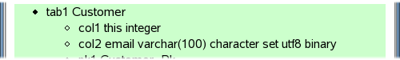
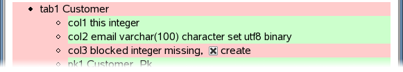
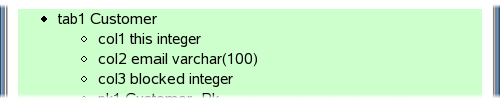
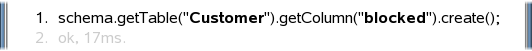

Cope with Object Persistence
Schema Trail

The
COPE Console
gathers various runtime information around COPE,
such as cache statistics, connection pool, jdbc driver etc.
This trail highlights it's schema evolution capabilities.
It assumes that you have already deployed the
COPE Console into your
web application.
Inspection
You may want to know first,
which database schema is created by COPE.
Open up the Console in your browser,
select the Tabulator Schema,
and you will see something like this:
The example model used to create this screenshot
contains two types Customer and Order.
Lets say, type Customer looks like this:
public class Customer extends Item
{
static final StringField email = new StringField().unique();
}
Now click on the table Customer
to see the table details:

This shows you two columns:
-
An integer column this
holding the primary key for implementing object identity.
-
A string column email holding the value of
the field email.
Following the columns there are the details of database constraints
set up by COPE,
but we won't deal with them in this trail.
Modification
Let's say you want to add a new field to your type:
public class Customer extends Item
{
static final StringField email = new StringField().unique();
static final BooleanField blocked = new BooleanField();
}
If you want to adjust the database schema
without loosing all your data,
you have to issue some SQL like
alter table Customer add column blocked integer.
COPE can do that for you,
but much more comfortable.
If you start up the new application containing the new field,
the Schema looks like this:
The red color tells you,
something is wrong with table Customer.
Click on it for further details:

Again, the red color tells you,
that something is wrong with column blocked.
In fact it is just missing, as expected.
At the end of the line there is a checkbox named create.
Select it (already done in this screenshot)
and push the button Apply further up the page.
The next screen looks like this:

Column blocked does exist now,
and therefore the red background turned to green.
On the same page there is a log about COPE's activities:

This shows you, that column blocked of table
Customer just has been created.
At the same time this log is valid java source code,
which can be used to achive the same effect programatically
within your application.
In a similar way you may deal with dropped columns,
changed column types, new tables, changed constraints etc.
It's recommended to check for red color
in the Schema tab,
whenever deploying a new version of your application
on an existing database schema.
If everything is green, then there is a very little chance,
that application and database schema don't fit to each other.
Further Reading
After having a look at the COPE Console,
you may want to go back to COPE itself.